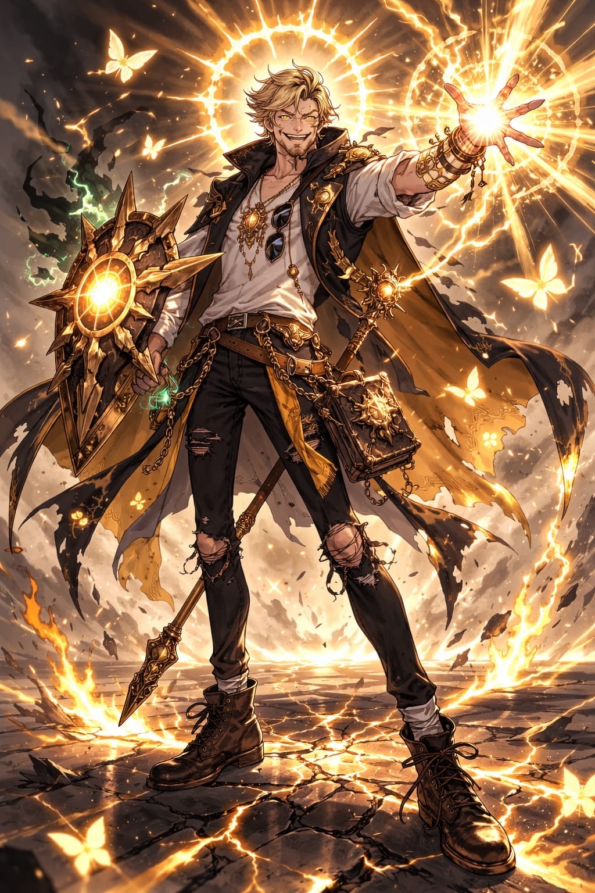
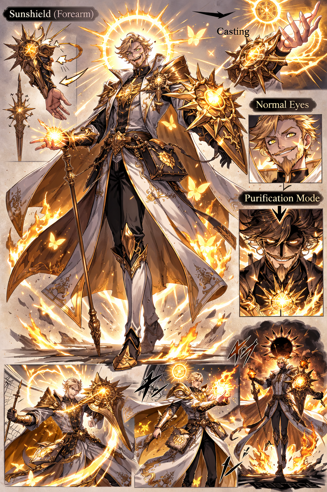

Aurelios Pyrebrand
Chierico — Fanatico purificatore della Luce (Livello 2)
Custom Lineage
Chierico 2
Accolito
Fey Touched
Neutrale Buono

Caratteristiche
| FOR | 13+1 |
|---|---|
| DES | 13+1 |
| COS | 14+2 |
| INT | 10+0 |
| SAG | 18+4 |
| CAR | 13+1 |
Vitals
| CA | 17 (19 con Scudo della Fede) |
|---|---|
| PF | 17 |
| Bonus Comp. | +2 |
| Atk Magico | +6 |
| CD Incantesimi | 14 |
Tiri Salvezza
| FOR | +1 |
|---|---|
| DES | +1 |
| COS | +2 |
| INT | +0 |
| SAG | +6 |
| CAR | +3 |
Equipaggiamento
- Corazza di Scaglie + Scudo
- Mazza solare
- Balestra leggera + 20 quadrelli
- Simbolo sacro dorato
Capacità
- Bagliore Protettivo — reazione, svantaggio a un attacco; 4 usi/rl.
- Channel Divinity — 2 usi (Divine Spark / Turn Undead), recuperi 1 uso al riposo breve.
- Fey Touched — Passo Velato 1x, Maledizione 1x (per riposo lungo).
Incantesimi (Lvl 2)
Fuoco Fatato
Illumina i bersagli falliti: vantaggio agli attacchi, niente invisibilità.
Comando
Ordine di una parola; non morti/chi non comprende è immune.
Dardo Guidato
Se colpisce, il prossimo attacco contro il bersaglio ha vantaggio.
Benedizione
Fino a 3 creature: +1d4 a tiri per colpire e TS.
Scudo della Fede
+2 CA a una creatura.
Trucchetti
- Fiamma Sacra (1d8 radiante)
- Rintocco del Morto (1d8/1d12 necrotici)
- Luce
- Taumaturgia
